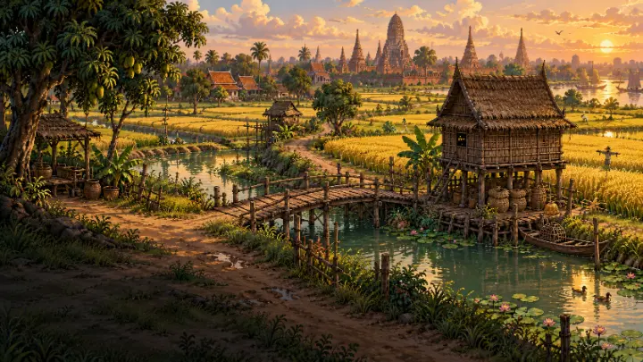
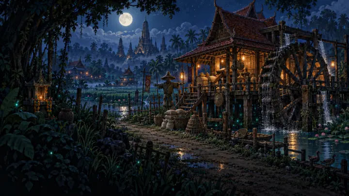

ผจญภัยในอยุธยาแห่งความเชื่อ ตีบวกอาวุธ ล่าบอส ตั้งกิลด์ยึดป้อมโรงสี แล้วประลองชิงอันดับทุกสัปดาห์ — เปิดเบราว์เซอร์แล้วเล่นได้ทันที ทั้งคอมและมือถือ
กำลังเช็กเซิร์ฟเวอร์…
ระบบเด่น
ทุกอย่างหาได้จากการเล่น ของดรอปจากมอนกลายเป็นยา อาหาร และหินตีบวก หมุนเวียนในตลาดของผู้เล่น
- ⚔️
7 อาชีพ · สาย Master
เริ่มจากผู้ฝึกตน เลือกอาชีพที่ลานครู ผ่านบททดสอบ แล้วไต่สู่ Master
- 🔨
ตีบวก +10
+1 ถึง +4 ไม่มีวันแตก ตั้งแต่ +5 ลุ้นสุดตัว มีเหล็กไหลและยันต์กันแตกช่วย
- 🃏
การ์ดมอนสเตอร์
ทุกมอนมีการ์ดของตัวเอง ใส่ในอุปกรณ์เพิ่มพลังแบบถาวร
- ⚒️
คราฟต์
ยา อาหารเพิ่มสเตตัส 10 นาที และหินตีบวก จากของดรอป
- 🐾
สัตว์เลี้ยง
ล่อจับมอนตัวเล็ก ฟักไข่ เลี้ยงจนสนิทแล้วได้สเตตัสติดตัว
- 🏯
กิลด์วอร์ยึดป้อม
ทุกเสาร์ 20:00 ทำลายศิลาราชสีห์ ครองป้อมโรงสีทั้งสัปดาห์
- 🏆
ทัวร์นาเมนต์ประลอง
ท้าดวลสะสมแต้ม อันดับ 1–3 ประจำสัปดาห์รับรางวัล
- 🌦️
โลกมีชีวิต
ฝน หมอก พายุ เปลี่ยนทุก 15 นาที ฝูงคลั่ง EXP ×2 และบอส MVP
อาชีพ
ทุกอาชีพเลือกได้ทั้งชายและหญิง แตะการ์ดเพื่อสลับ
ออกเดินทาง
จากเมืองหลวงอยุธยา ออกประตูเหนือสู่ทุ่งนา สวนหมาก โรงสี และบึงบัวต้องมนตร์

ทุ่งขวัญข้าว
Lv. 1–12 · หุ่นฟางหลง หนูยุ้งข้าว ตั๊กแตนเกราะ และพญาหนูยุ้งข้าว
สวนหมากคลองเก่า
Lv. 10–22 · ลูกลิงฉกของ เถาวัลย์พันขา โคมหลงทาง และวานรเจ้าเล่ห์

โรงสีใต้เงาจันทร์
Lv. 15–25 · เจ้าหุ่นฟางพันเชือก ดันเจี้ยนใต้ถุน และสนามกิลด์วอร์ · ต่อไปบึงบัว Lv. 25–35
กิจกรรมประจำสัปดาห์
- 🏯 กิลด์วอร์ยึดป้อมโรงสีทุกวันเสาร์ 20:00–20:30 น.
- 🏆 ปิดรอบทัวร์นาเมนต์ประลองทุกคืนวันอาทิตย์ 24:00 น.
- 🔥 ฝูงคลั่ง EXP ×2 ดรอป ×2ทุก 20 นาที นาน 5 นาที วนทุกแผนที่นอกเมืองตลอดวัน
- 👑 บอส MVPราชาหุ่นฟางเพลิงที่โรงสี เกิดใหม่เป็นรอบ ประกาศทั้งเซิร์ฟดูเวลาในเกม
อัปเดตล่าสุด
- 0.99
สร้างตัวละครใหม่มีหน้าต่างต้อนรับ และลูกศรสีทองชี้ปุ่มที่ต้องกดในทุกเควสสอนเล่น
- 0.98
เควสเนื้อเรื่องใหม่ที่สอนเล่นไปในตัว 23 เควส · บททดสอบเปลี่ยนอาชีพแบบ 3 ด่าน · หน้าต่างเด้งเมื่อ Job ตัน
- 0.97
สภาพอากาศ ฝน หมอก พายุฟ้าแลบ · แก้ปุ่ม AUTO และการสวมใส่
- 0.96
ทัวร์นาเมนต์ประลองรายสัปดาห์ · ประกาศกิจกรรมเข้า Discord
- 0.95
กิลด์วอร์ยึดป้อมโรงสีทุกคืนวันเสาร์
- 0.93–0.94
ท้าดวล PvP · คราฟต์ยา อาหาร หินตีบวก และยันต์กันแตก
พร้อมออกเดินทางหรือยัง
เล่นฟรีบนเบราว์เซอร์ บันทึกด้วยบัญชี Google หรือทดลองเล่นได้ทันที